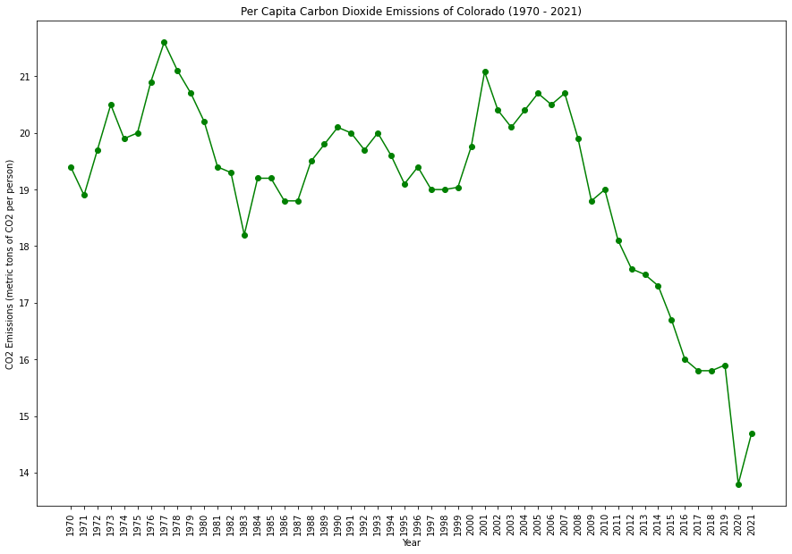

|  | |
|
Colorado has been proactive in transitioning to cleaner energy sources, setting ambitious renewable energy targets. The state has policies supporting solar and wind energy, and initiatives to reduce emissions from the transportation sector. Concerns about air quality in areas like Denver drive environmental policies.